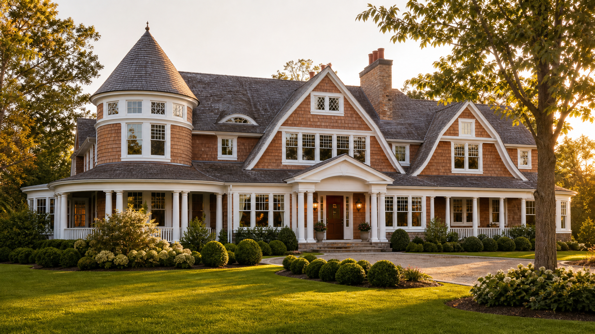

Est. 1992 · Roslyn Heights, NY
Custom residential architecture rooted in symmetry, proportion, and historical correctness — from Georgian manors to modern Shingle Style estates.
As seen in The Wolf of Wall Street and Gotham
“Architecture is based on symmetry and proportions, and beauty a product of rational order and harmonious proportion.”
— drawing on Pythagoras, the foundation of Michael Jay Wallin's design practice
Every residence is treated as a unique commission — a balance of modern amenities and traditional architectural values, designed with client satisfaction placed above recognition, and executed with the historical correctness that defines the Gold Coast's most enduring homes.
After four years in the U.S. Army stationed in Germany as a cartographer, and fifteen years at top Long Island residential design-build firms, Michael founded his boutique architectural practice in 1992. He holds a Bachelor's Degree in Architecture from NYIT and has spent over three decades creating hundreds of high-end homes across the region.
In 2015 his work received the Archi Award for outstanding residential design. His designs have also appeared on screen in The Wolf of Wall Street and the television drama Gotham — a testament to the cinematic quality of his architectural vision.
Start a conversation about your home →Filter the portfolio by style to explore the full range of Michael's residential work.
A glimpse into the design process across traditional and transitional architectural styles.
Tell us about your vision and we'll follow up to schedule an introductory call with Michael. Share as much detail as you'd like — style preferences, site photos, or an existing survey.
Phone: (631) 827-0594
Email: michael@architectwallin.com
Office: 69 Roslyn Road, Roslyn Heights, NY 11577